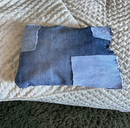

O&O Portfolio Bjorn
Dit is mijn O&O Portfolio met al mijn projecten.
Brugklas (Jaar 1)
Project 1: Upcycling
Team: Thomas, Celine, Roos en ik. Cijfer: 7,8.
Tas gemaakt van spijkerstof.
Dit tasje hebben we gemaakt met verknipte stukken spijkerstof van verschillende spijkerbroeken

Project 2; Vakkanjers, in het licht van gogh.